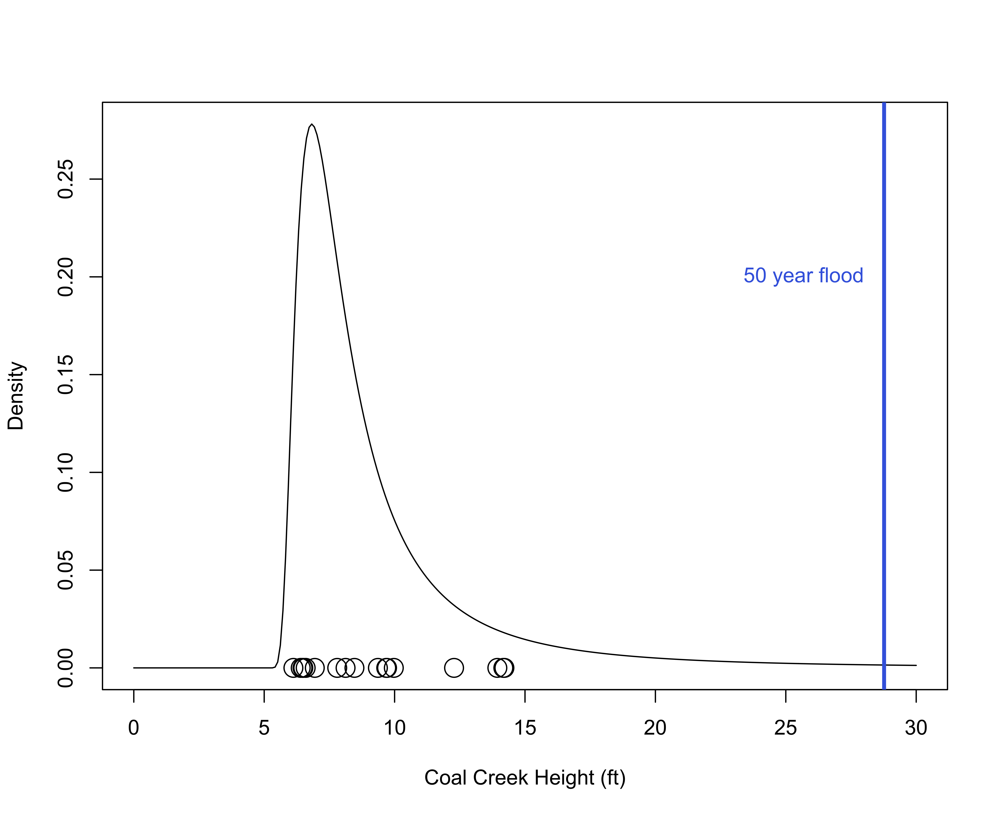
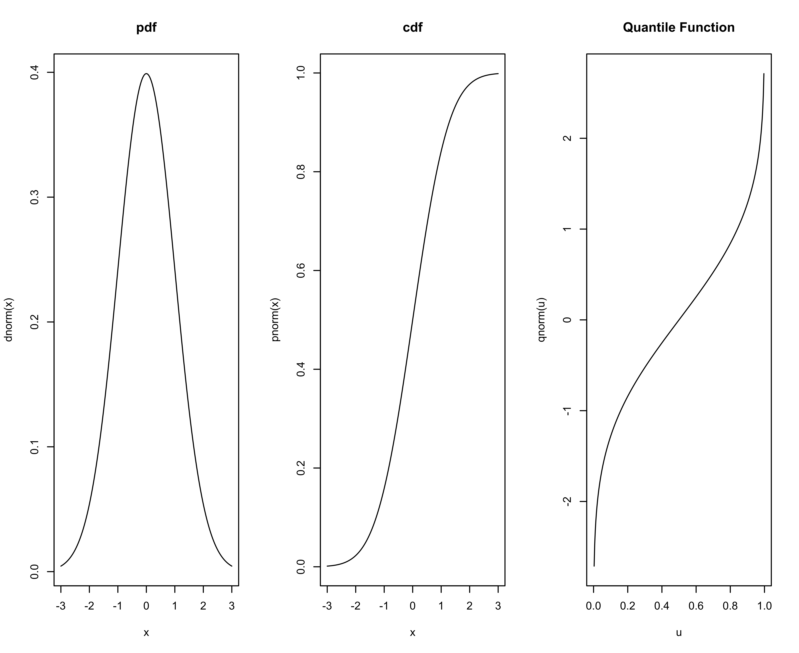
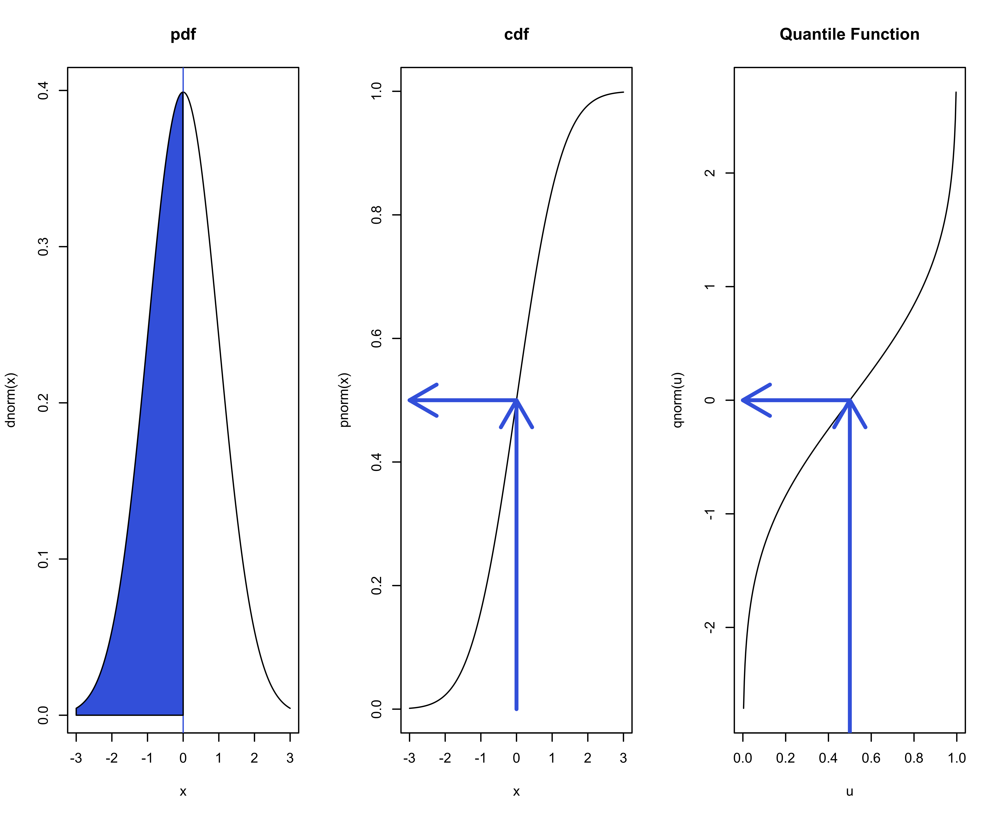
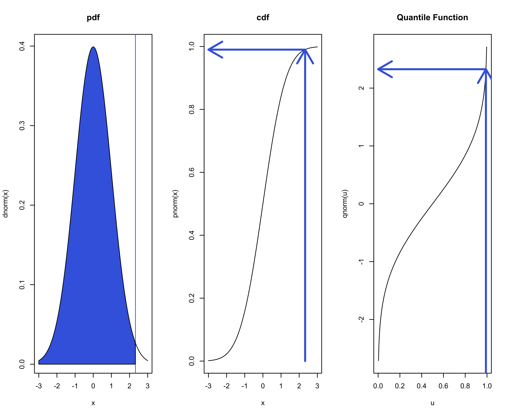

library(tidyverse)
bigdata <- read_table("https://nwis.waterservices.usgs.gov/nwis/iv/?sites=10242000¶meterCd=00065&startDT=2000-01-01T00:00:00.000-06:00&endDT=2026-12-31T23:59:59.999-06:00&siteStatus=all&format=rdb",
col_names = c("label1", "label2", "Date", "Time", "tz", "Height", "label3"),
skip = 32) |>
mutate(Date = ymd_hms(paste(Date, Time), tz = "America/Denver")) |>
select(Date, Height)Transform / Feature Engineering: Quantitative Data
BYU STAT 250
Dr. Scott D. Grimshaw
Announcements
Recap of last few lectures
Row Operations (filter, [ , ])
Column Operations (select, mutate,$)
Outline
Dividing a dataset into groups and performing computations on group chunks
Estimating 50 year Flood
Goal is to predict the peak of a river for flood planning
Imagine building a bridge over a river. How high does it need to be?
Coal Creek, Cedar City UT


Import
From USGS website
Tidy
# A tibble: 6 × 2
Date Height
<dttm> <dbl>
1 2023-10-11 07:30:00 4.48
2 2023-10-11 07:35:00 4.48
3 2023-10-11 07:40:00 4.48
4 2023-10-11 07:45:00 4.48
5 2023-10-11 07:50:00 4.48
6 2023-10-11 07:55:00 4.48USGS has sensors that measures the Gage Height (ft) every 5 minutes !
Cool they do that, but we don’t need that level of detail because it only floods once a year at snowfall runoff
Transform
We want the peak (max) for each year
# A tibble: 6 × 2
Date Height
<dttm> <dbl>
1 2023-10-11 07:30:00 4.48
2 2023-10-11 07:35:00 4.48
3 2023-10-11 07:40:00 4.48
4 2023-10-11 07:45:00 4.48
5 2023-10-11 07:50:00 4.48
6 2023-10-11 07:55:00 4.48group_by and summarize
Use group_by to divide the dataset into groups meaningful for the analysis
group_bydoesn’t change the data (it’s a new feature of the dataset that changes the behavior of subsequent data verbs)
Use summarize to compute
mutatecomputes using each row of an existing column (no change to number of rows)summarizecomputes across several rows and reduces the dataset
group_by and summarize
# A tibble: 17 × 2
Year Max_Height
<dbl> <dbl>
1 2007 14.2
2 2008 13.9
3 2009 14.2
4 2010 8.12
5 2011 9.97
6 2012 12.3
7 2013 9.71
8 2014 9.36
9 2015 6.4
10 2016 7.8
11 2017 8.46
12 2018 6.5
13 2019 6.47
14 2020 6.94
15 2021 9.68
16 2022 6.12
17 2023 6.59Programming Thinking
For Loop
Estimating 50 year Flood
Estimating 50 year Flood
Probability Models for Max (Gumbel, Weibull, Frechet, Gen Extreme Value)
Results of Distribution Parameter Estimation
--------------------------------------------
Assumed Distribution: Generalized Extreme Value
Estimated Parameter(s): location = 7.4175453
scale = 1.5123046
shape = -0.5607297
Estimation Method: mle
Data: peak$Max_Height
Sample Size: 17Code
x <- seq(0, 30, length = 300)
fx <- dgevd(x, location = out$parameters[1], scale = out$parameters[2], shape = out$parameters[3])
plot(x, fx, type = "l", xlab = "Coal Creek Height (ft)", ylab = "Density")
abline(v = qgevd(0.98, location = out$parameters[1], scale = out$parameters[2], shape = out$parameters[3]), col = "royalblue", lwd = 3)
points(peak$Max_Height, rep(0, length(peak$Max_Height)), cex = 2)
text(28, 0.20, "50 year flood", adj = 1, col = "royalblue")
Details of summarize
summarize is similar to Base R functions
Details of summarize
summarize is similar to Base R functions
Something New!
More with summarize and group_by / .by
Table of Hydrology Summary Statistics by Year
# A tibble: 17 × 8
Year Min P5 Q1 Median Q3 P95 Max
<dbl> <dbl> <dbl> <dbl> <dbl> <dbl> <dbl> <dbl>
1 2007 4.53 4.7 4.73 4.75 4.82 13.0 14.2
2 2008 4.57 4.74 4.78 4.93 5.26 5.82 13.9
3 2009 4.58 4.64 4.69 4.86 5.12 6.16 14.2
4 2010 4.55 4.69 4.77 4.89 5.27 6.24 8.12
5 2011 4.46 4.81 4.89 5.04 5.56 6.39 9.97
6 2012 4.41 4.67 4.74 4.8 5.07 5.67 12.3
7 2013 4.55 4.7 4.78 4.85 5.17 5.8 9.71
8 2014 4.35 4.61 4.68 4.75 4.92 5.34 9.36
9 2015 4.43 4.62 4.68 4.75 5.05 5.44 6.4
10 2016 4.48 4.65 4.72 4.82 5.08 5.72 7.8
11 2017 4.51 4.61 4.71 4.76 5.13 5.7 8.46
12 2018 4.51 4.56 4.62 4.66 4.72 5.17 6.5
13 2019 4.42 4.55 4.67 4.74 5.16 6.04 6.47
14 2020 4.4 4.53 4.61 4.69 4.87 5.65 6.94
15 2021 4.21 4.32 4.39 4.61 4.74 5.04 9.68
16 2022 4.2 4.24 4.34 4.41 4.49 4.87 6.12
17 2023 4.33 4.46 4.49 4.52 4.65 5.57 6.59Lecture Review
Dividing a dataset into groups and performing computations on group chunks
summarize and group_by / .by
Appendix:
- Quantiles
Random Variables
\(X\) is a random variable
pmf / pdf: \(p(x) = {\rm P}(X=x)\) or \(f(x)\) represents probability as area under curve
Moments: \({\rm E}(X)\), \({\rm V}(X)\), mgf: \(m(t)={\rm E}(e^{tX})\)
cdf: \(F(x) = {\rm P}(X\leq x)\)
- What we call “percentiles” (My toddler is so tall! She is in the 90th percentile of height.)
quantile function:
inverse of cdf
given probability \(u\), what is the value \(x\) such that \({\rm P}(X\leq x) = u\)
Random Variables
Median as Quantile
Quantile Function for Rare Events
What large value only happens 1% of the time?
